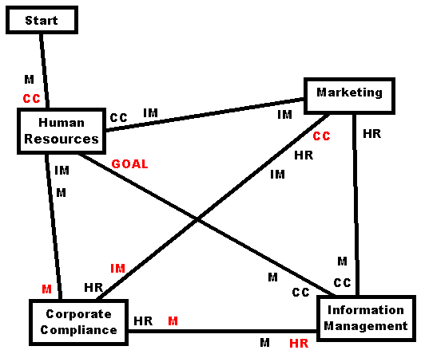

|
The lines indicate the connections between desks. Just before you arrive at a desk, there are initials next to the line. These indicate where you can go after you receive the next form. The initials in red indicate the true path to the goal. For example, if you go from Information Management to Corporate Compliance, you would travel left on the line at the bottom of the map. Just before the line reaches Corporate Compliance, there are these initials: HR and M. That means you will next be getting a menu saying you can go to Human Resources or Marketing (and Marketing is on the true path to the goal).
|